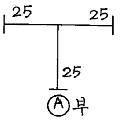
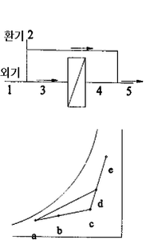

공조냉동기계기능사 (2004-04-04 기출문제)
1과목: 공조냉동안전관리
1. 작업자의 안전태도를 형성하기 위한 가장 유효한 방법은?
- 안전에 관한 훈시
- 안전한 환경의 조성
- 안전 표지판의 부착
- 안전에 관한 교육실시
(정답률: 83%)

2. 정 작업을 할 때 강하게 때려서는 안 될 경우는 어느 때 인가?
- 전 작업에 걸쳐
- 작업 중간과 끝에
- 작업 처음과 끝에
- 작업 처음과 중간에
(정답률: 76%)
3. 다음 중 장갑을 끼고서 할 수 없는 작업은?
- 줄작업
- 해머작업
- 용접작업
- 전기작업
(정답률: 76%)
4. 방폭성능을 가진 전기기기의 구조 분류에 해당되지 않는 것은?
- 내압방폭구조
- 유입방폭구조
- 압력방폭구조
- 자체방폭구조
(정답률: 67%)
5. 보일러 내부의 수위가 내려가 과열되었을 때 응급조치 사항 중 타당하지 않는 것은?
- 안전밸브를 열어 증기를 빼낼 것
- 급수밸브를 열어 다량의 물을 공급할 것
- 댐퍼 및 재를 받는 곳의 문을 닫을 것
- 연료의 공급밸브를 중지하고 댐퍼와 1차 공기의 입구를 차단할 것
(정답률: 45%)
6. 보일러 청소인 화학적인 방법에서 염산을 많이 사용하는 이유가 아닌 것은?
- 스케일 용해 능력이 우수하다.
- 물에 용해도가 작아서 세관 후 세척이 쉽다.
- 가격이 저렴하여 경제적이다.
- 부식 억제제의 종류가 많다.
(정답률: 54%)
7. 수액기를 설치할 때 2개의 수액기 지름이 서로 다른 경우 어떻게 설치해야 안전성이 있는가?
- 상단을 일치시킨다.
- 하단을 일치시킨다.
- 중단을 일치시킨다.
- 어느 쪽이든 관계없다.
(정답률: 61%)
8. 냉동기의 토출가스 압력이 높아지는 원인에 해당되지 않는 것은?
- 냉각수 부족
- 불응축가스 혼입
- 냉매의 과소 충전
- 응축기의 물 때 부착
(정답률: 52%)
9. 아크용접작업 기구 중 보호구와 관계없는 것은?
- 헬멧
- 앞치마
- 용접용 홀더
- 용접용 장갑
(정답률: 74%)
10. 냉동장치 운전 중 액해머 현상이 일어나는 경우 정상운전으로 회복시키기 위한 조치로 제일 먼저 해야 할 것은?
- 토출밸브를 닫는다.
- 흡입밸브를 연다.
- 안전밸브를 연다.
- 압축기를 정지시킨다.
(정답률: 57%)
11. 2개 이상의 전선이 서로 접촉되어 폭음과 함께 녹아 버리는 현상은?
- 혼촉
- 단락
- 누전
- 지락
(정답률: 43%)
12. 가스 용접 작업에서 일어나는 재해가 아닌 것은?
- 화재
- 전격
- 폭발
- 중독
(정답률: 80%)
13. 아세틸렌의 누설검지법으로 가장 적당한 것은?
- 비눗물
- 촛불
- 산소
- 프레온
(정답률: 86%)
14. 제독작업에 필요한 보호구의 종류와 수량을 바르게 설명한 것은?
- 보호복은 독성가스를 취급하는 전종업원수의 수량을 구비할 것
- 보호장갑 및 보호장화는 긴급작업에 종사하는 작업원수의 수량만큼 구비할 것
- 소화기는 긴급작업에 종사하는 작업원수의 수량을 구비할 것
- 격리식 방독 마스크는 독성가스를 취급하는 전종업원의 수량만큼 구비할 것
(정답률: 48%)
15. 가연물의 구비조건이 아닌 것은?
- 표면적이 적을 것
- 연소 열량이 클 것
- 산소와 친화력이 클 것
- 열전도도가 작을 것
(정답률: 35%)
2과목: 냉동기계
16. 다음의 설명 중 틀린 것은?
- 냉동능력 2㎾는 약 0.52 냉동톤이다.
- 냉동능력 10㎾, 압축기동력 4㎾의 냉동장치에 있어 응축부하는 14㎾이다.
- 냉매증기를 단열 압축하면 온도는 높아지지 않는다.
- 진공계의 지시값이 10㎝Hg인 경우, 절대 압력은 약 0.9㎏/cm2이다.
(정답률: 56%)
17. 4.5㎏의 얼음을 융해하여 0℃의 물로 하려면 약 몇 ㎉의 열량이 필요한가? (단, 얼음은 0℃ 얼음이며, 융해잠열은 80kcal/kg이다.)
- 320 ㎉
- 340 ㎉
- 360 ㎉
- 380 ㎉
(정답률: 68%)
18. 장치의 저온측에서 윤활유와 가장 잘 용해되는 냉매는 어느 것인가?
- 프레온 12
- 프레온 22
- 암모니아
- 아황산가스
(정답률: 34%)
19. 다음 냉매가스 중 1RT당 냉매 가스 순환량이 제일 큰 것은? (단, 온도 조건은 동일하다.)
- 암모니아
- 후레온 22
- 후레온 21
- 후레온 11
(정답률: 27%)
20. NH3와 접촉시 흰 연기를 발생하는 것은?
- 아세트산
- 수산화나트륨
- 염산
- 염화나트륨
(정답률: 47%)
21. 암모니아 냉매와 프레온 냉매의 설명 중 맞는 것은?
- R-12는 암모니아보다 냉동효과(kcal/kg)가 커서 일반적으로 많이 사용한다.
- R-22는 암모니아보다 냉동효과(kcal/kg)가 크고 안전하다.
- R-22는 R-12에 비하여 저온용에 적합하다.
- R-12는 암모니아에 비하여 유분리가 용이하다.
(정답률: 49%)
22. 표준싸이클을 유지하고 암모니아의 순환량을 186[㎏/h]로 운전했을 때의 소요동력은 몇 [㎾]인가? (단, 1㎾는 860㎉/h, NH3 1㎏을 압축하는데 필요한 열량은 모리엘 선도상에서는 56[㎉/㎏]이라 한다.)
- 24.2[㎾]
- 12.1[㎾]
- 36.4[㎾]
- 28.6[㎾]
(정답률: 43%)
23. 압축기의 상부간격(Top Clearance)이 크면 냉동 장치에 어떤 영향을 주는가?
- 토출가스 온도가 낮아진다.
- 윤활유가 열화되기 쉽다.
- 체적 효율이 상승한다.
- 냉동능력이 증가한다.
(정답률: 52%)
24. 다음 중 제빙용 냉동 장치의 증발기로서 가장 적합한 것은?
- 탱크형 냉각기
- 반만액식 냉각기
- 건식 냉각기
- 관 코일식 냉각기
(정답률: 56%)
25. 부우스터(Booster)압축기란?
- 2단 압축냉동에서 저압 압축기를 말한다.
- 2원 냉동에서 저온용 냉동장치의 압축기를 말한다.
- 회전식 압축기를 말한다.
- 다효압축을 하는 압축기를 말한다.
(정답률: 31%)
26. 냉동장치의 팽창밸브 용량을 결정 하는데 해당하는 것은?
- 밸브 시이트의 오리피스 직경
- 팽창밸브의 입구의 직경
- 니이들 밸브의 크기
- 팽창밸브의 출구의 직경
(정답률: 57%)
27. 유압 압력조정밸브는 냉동장치의 어느 부분에 설치되는가?
- 오일펌프 출구
- 크랭크 케이스 내부
- 유 여과망과 오일펌프사이
- 오일쿨러 내부
(정답률: 45%)
28. 냉동능력이 5냉동톤이며 그 압축기의 소요동력이 5마력(PS)일 때 응축기에서 제거하여야 할 열량은 몇 ㎉/h인가?
- 18790 ㎉/h
- 21100 ㎉/h
- 19760 ㎉/h
- 20900 ㎉/h
(정답률: 51%)
29. 간접 팽창식과 비교한 직접 팽창식 냉동장치의 설명이 아닌 것은?
- 소요동력이 적다.
- RT당 냉매 순환량이 적다.
- 감열에 의해 냉각시키는 방법이다.
- 냉매 증발 온도가 높다.
(정답률: 52%)
30. 액순환식 증발기와 액펌프 사이에 반드시 부착해야 하는 것은?
- 전자 밸브
- 여과기
- 역지 밸브
- 건조기
(정답률: 54%)
31. 압축기가 1대일 경우 고압 차단 스위치(HPS)의 압력 인출 위치는?
- 흡입지변 직전
- 토출지변 직전
- 팽창밸브 직전
- 수액기 직전
(정답률: 41%)
32. NH3 냉매를 사용하는 냉동장치에서는 열교환기를 설치하지 않는다. 그 이유는?
- 응축 압력이 낮기 때문에
- 증발 압력이 낮기 때문에
- 비열비 값이 크기 때문에
- 임계점이 높기 때문에
(정답률: 55%)
33. 액펌프 냉각 방식의 이점으로 옳은 것은?
- 리퀴드 백(liquid back)을 방지할 수 있다.
- 자동제상이 용이하지 않다.
- 증발기의 열통과율은 타증발기보다 양호하지 못하다.
- 펌프의 캐비테이션 현상 방지를 위한 낙차는 고려하지 않는다.
(정답률: 66%)
34. 다음 강관용 이음쇠 중 관을 도중에서 분기할 때 사용하는 이음쇠는?
- 벤드
- 엘보우
- 소켓
- 와이
(정답률: 49%)
35. 용접 강관을 벤딩할 때 구부리고자 하는 관을 바이스에 어떻게 물려야 되나?
- 용접선을 안쪽으로 향하게 한다.
- 용접선을 바깥쪽으로 향하게 한다.
- 용접선을 중간에 놓는다.
- 용접선은 방향에 관계없이 물린다.
(정답률: 44%)
36. 지름 20㎜ 이하의 동관을 구부릴 때는 동관전용 벤더가 사용되며 최소곡률 반지름은 관지름의 몇 배인가?
- 1 - 2배
- 2 - 3배
- 4 - 5배
- 6 - 7배
(정답률: 45%)
37. 다음 중 나사이음에 사용되는 장비가 아닌 것은?
- 파이프 바이스
- 파이프 커터
- 드레서
- 리이드형 나사절삭기
(정답률: 69%)
38. 다음과 같이 25A×25A×25A의 티이에 20A관을 직접 A부에 연결하고자 할 때 필요한 이음쇠는 어느 것인가?

- 유니언
- 니플
- 이경부싱
- 플러그
(정답률: 64%)
39. 오옴의 법칙에 대한 설명 중 옳은 것은?
- 전류는 전압에 비례한다.
- 전류는 저항에 비례한다.
- 전류는 전압의 2승에 비례한다.
- 전류는 저항의 2승에 비례한다.
(정답률: 66%)
40. 고유저항에 대한 설명 중 맞는 것은?
- 저항[R]는 길이[ℓ]에 비례하고 단면적[A]에 반비례한다.
- 저항[R]는 단면적[A]에 비례하고 길이[ℓ]에 반비례한다.
- 저항[R]는 길이[ℓ]에 비례하고 단면적[A]에 비례한다.
- 저항[R]는 단면적[A]에 반비례하고 길이[ℓ]에 반비례한다.
(정답률: 44%)
41. 제상 방법이 아닌 것은?
- 압축기 정지 제상
- 핫 가스 분무 제상
- 살수식 제상
- 증발 압력 조정 제상
(정답률: 34%)
42. 다음 냉매에 대한 설명 중 옳은 것은?
- 증발온도에서의 압력은 대기압보다 약간 낮은 것이 유리하다.
- 비열비가 큰 것이 유리하다.
- 임계온도가 낮을수록 유리하다.
- 응고온도가 낮을수록 유리하다.
(정답률: 44%)
43. 2단압축냉동 사이클에서 중간냉각을 행하는 목적이 아닌 것은?
- 고단 압축기가 과열되는 것을 방지 한다.
- 고압 냉매액을 과냉시켜 냉동효과를 증대 시킨다.
- 고압측 압축기의 흡입가스 중의 액을 분리시킨다.
- 저단측 압축기의 토출가스를 과열시켜 체적효율을 증대 시킨다.
(정답률: 44%)
44. 정해진 순서에 따라 작동하는 제어를 무엇이라 하는가?
- 피드백 제어
- 무접점 제어
- 변환 제어
- 시퀀스 제어
(정답률: 77%)
45. 냉동 사이클에서의 냉매 상태변화가 옳게 설명된 것은?
- 압축과정 : 압력상승, 비체적감소
- 응축과정 : 압력일정, 엔탈피증가
- 팽창과정 : 압력강하, 엔탈피감소
- 증발과정 : 압력일정, 온도상승
(정답률: 51%)
3과목: 공기조화
46. 인체로 부터의 발생 열량에 대한 설명 중 틀린 것은?
- 인체 발열량은 사람의 활동 상태에 따라 달라진다.
- 식당에서 식사하는 인원에 대해서는 음식물의 발열량도 포함시킨다.
- 인체 발생 열에는 감열과 잠열이 있다.
- 인체 발생 열은 인체 내의 기초 대사에 의한 것이므로 실내온도에 관계없이 일정하다.
(정답률: 66%)
47. 단일덕트 정풍량 방식의 특징이 아닌 것은?
- 공조기가 기계실에 있으므로 운전, 보수가 용이하고 진동소음의 전달 염려가 적다.
- 송풍량이 크므로 환기량도 충분하다.
- 조운수가 적을 때는 설비비가 다른 방식에 비해서 적게 든다.
- 변풍량 방식에 비하여 연간의 송풍동력이 적고 성 에너지로 된다.
(정답률: 47%)
48. 증기 방열기의 표준 방열량의 값은 몇 kcal/m2·h 인가?
- 450
- 650
- 750
- 850
(정답률: 50%)
49. 사무실의 난방에 있어서 가장 적합하다고 보는 상대 습도와 실내 기류의 값은?
- 30%, 0.⑤m/s
- 50%, 0.25m/s
- 30%, 0.25m/s
- 50%, 0.⑤m/s
(정답률: 45%)
50. 다음은 이중 닥트방식에 대한 설명이다. 옳지 않은 것은?
- 중앙식 공조방식으로 운전 보수관리가 용이하다.
- 실내부하에 따라 각실 제어나 존(zone)별 제어가 가능하다.
- 열매가 공기이므로 실온의 응답이 아주 빠르다.
- 단일 닥트방식에 비해 에너지 소비량이 적다.
(정답률: 56%)
51. 덕트 내의 통과 풍량의 조절 또는 폐쇄에 쓰이는 기구는?
- 댐퍼
- 그릴
- 에어워셔
- 엘리미네이터
(정답률: 75%)
52. 흡수식 냉동기의 특징 중 부적당한 것은?
- 전력 사용량이 적다
- 소음, 진동이 크다
- 용량제어 범위가 넓다
- 여름철에도 보일러 운전이 필요하다
(정답률: 46%)
53. 연도나 굴뚝으로 배출되는 배기가스에 선회력을 부여함으로써 원심력에 의해 연소가스 중에 있던 입자를 제거하는 집진기는?
- 세정식 집진기
- 싸이크론 집진기
- 전기 집진기
- 원통다관형 집진기
(정답률: 65%)
54. 다음 중 공기조화 설비에서 단일덕트 방식의 장점에 들지 않는 것은?
- 덕트가 1계통이므로 시설비가 적게 들고 덕트 스페이스도 적게 차지한다.
- 냉동과 온풍을 혼합하는 혼합상자가 필요 없으므로 소음과 진동도 적다.
- 냉·온풍의 혼합손실이 없으므로 에너지가 절약적이다.
- 덕트 스페이스를 크게 차지한다.
(정답률: 54%)
55. 소요동력 2kw의 송풍기를 사용하는 공조장치에서의 송풍기 취득 열량은 몇 kcal/h인가?
- 2,000
- 1,720
- 1,680
- 1,500
(정답률: 46%)
56. 온수난방의 장점을 열거한 것 중 잘못된 것은?
- 난방부하의 변동에 따른 온도 조절이 용이하다.
- 열용량이 크므로 실내온도가 급변하지 않는다.
- 설비비가 증기난방의 경우보다 적게 든다.
- 증기난방보다 쾌감도가 좋다.
(정답률: 44%)
57. 보일러의 종류에 따른 전열면적당 증발률이 옳은 것은?
- 노통보일러 : 35 ∼ 50 (kgf/m2·h)
- 연관보일러 : 30 ∼ 65 (kgf/m2·h)
- 직립보일러 : 15 ∼ 20 (kgf/m2·h)
- 노통연관보일러 : 30 ∼ 60 (kgf/m2·h)
(정답률: 30%)
58. 다음 난방설비에 관한 설명 중 옳지 않은 것은?
- 증기난방의 방열기는 주로 열의 복사작용을 이용하는 것이다.
- 온수난방은 주택, 병원, 호텔 등의 거실에 적합한 난방방식이다.
- 증기난방은 학교, 사무소와 같은 건축물에 사용할 수 있는 난방방식이다.
- 전기열에 의한 난방은 편리하지만, 경제적이지 못하다.
(정답률: 40%)
59. 일반적으로 겨울철에 실내에서 손실되는 열만을 계산하여 난방부하로 하는 경우가 많다. 그러면 다음 중 난방부하계산시에 계산하여야 할 부하는 어느 것인가?
- 유리창을 통한 일사열
- 실내인원의 운동에 의한 열
- 송풍기 가동에 의한 열
- 외벽체를 통한 온도차에 의한 열
(정답률: 48%)
60. 다음 계통도와 같은 공조장치에서 5점의 공기는 습공기선도의 어느 위치에 해당하는가?

- a
- b
- c
- d
(정답률: 37%)